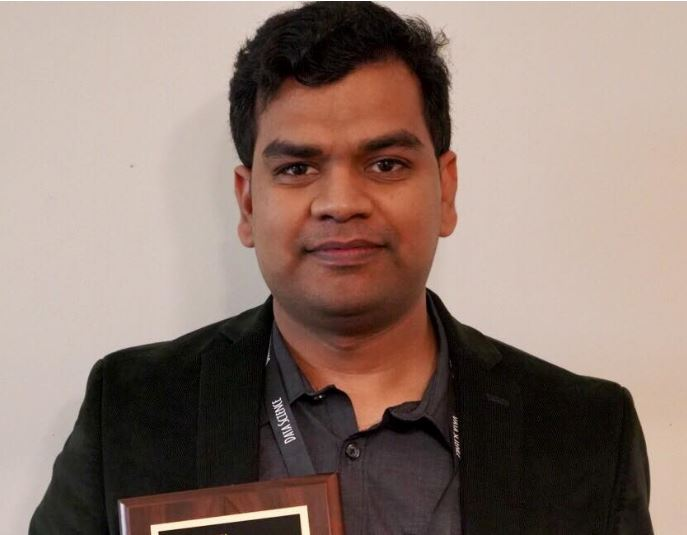

 |
|
Recent News:
Publications:
Hand Pose Guided 3D Pooling for Word-level Sign Language Recognition.
|
FineHand: Learning Hand Shapes for American Sign Language Recognition.
Al Amin Hosain, Panneer Selvam Santhalingam, Parth Pathak, Huzefa Rangwala and Jana Kosecka
15th IEEE Conference of Face and Gesture Recognition (FaGEW Workshop), 2020, Buenos Aires, Argentina (Virtual)
[Paper]
Body Pose and Deep Hand-shape Feature Based American Sign Language Recognition.
Al Amin Hosain, Panneer Selvam Santhalingam, Parth Pathak, Jana Kosecka and Huzefa Rangwala
7th IEEE International Conference on Data Science and Advanced Analytics (DSAA), 2020, Sydney, Australia (Virtual)
Sign Language Recognition Analysis using Multimodal Data.
Al Amin Hosain, Panneer Selvam Santhalingam, Parth Pathak, Jana Kosecka and Huzefa Rangwala
6th IEEE International Conference on Data Science and Advanced Analytics (DSAA), 2019, Washington D.C., USA
[Paper]